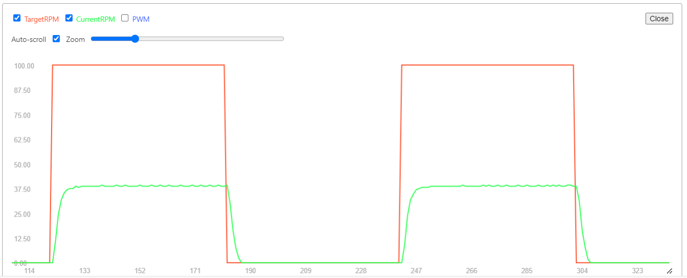
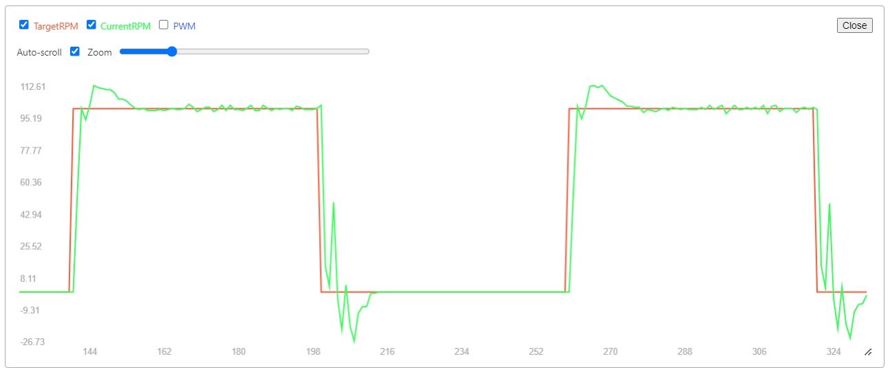

PID Control
📘 Theory Summary
A PID controller is a control loop feedback mechanism widely used in industrial control systems and a variety of other applications requiring continuously modulated control. It continuously calculates an error value e(t) as the difference between a desired setpoint (SP) r(t) and a measured process variable (PV) y(t) and applies a correction based on proportional, integral, and derivative terms.

Pseudocode
initialize variables
loop:
calculate error
calculate integral
calculate derivative
calculate output
apply output
previous_error := 0
integral := 0
loop:
error := setpoint − measured_value
proportional := error;
integral := integral + error × dt
derivative := (error - previous_error) / dt
output := Kp × proportional + Ki × integral + Kd × derivative
previous_error := error
wait(dt)
Source: PID Controller Pseudocode
💻 Test Code
This example will cover the speed control of a DC motor (N20).
Prerequisite
- to be able to control the motor (with the driver)
- to be able to read the speed of the motor (in rpm) using an encoder
- to be able to plot the values (much easier to debug and then to tune the parameters)
Example implementation will be added here.
Variable initialization
#define LOOP_INTERVAL_MS 50 // 50ms loop time -> 20Hz
float targetRPM = 50.0; // Target speed in Revolutions Per Minute (RPM)
float kp = 1; // Proportional gain
float ki = 0; // Integral gain
float kd = 0; // Derivative gain
// these values need to be tuned for your specific motor and load
float error = 0;
float lastError = 0;
float integral = 0;
float derivative = 0;
PID Control Loop
unsigned long currentTime = millis();
// Execute the PID loop at a fixed rate
const float deltaTime = currentTime - lastTime
if (deltaTime >= LOOP_INTERVAL_MS) {
lastTime = currentTime; // Update the last execution time
long currentCount = encoderCount; // Read volatile variable once
// Calculate current RPM
// TODO
// PID Calculation
error = targetRPM - currentRPM;
integral += error * deltaTime;
derivative = (error - lastError) / deltaTime;
motorPWM = (kp * error) + (ki * integral) + (kd * derivative);
// Set motor speed
// TODO
// Print diagnostics for plotting
// TODO
lastError = error;
}
Testing
To test the PID controller's response, you can implement a square wave that switches the target RPM between two values at regular intervals:
unsigned long currentTime = millis();
// Switch target RPM every 3 seconds (3000 ms)
if (currentTime - lastTargetSwitchTime >= 3000) {
lastTargetSwitchTime = currentTime;
if (targetRPM > 0) {
targetRPM = 0.0;
} else {
targetRPM = 50.0;
}
}
📈 Expected Results
Before Tuning
With default PID parameters (Kp=1, Ki=0, Kd=0), you'll typically see poor performance (oscillations ,slow response, steady-state error):

After Tuning
With properly tuned parameters, the system should follow the target setpoint closely with minimal overshoot:

🔧 PID Tuning
Tuning PID parameters is crucial for optimal performance. The process involves adjusting Kp, Ki, and Kd values to achieve: - Fast response time - Minimal overshoot - No steady-state error - System stability
Note: A dedicated tuning guide will be added to this knowledge base. For now, you can reference these resources:
Last updated: November 2025 ````